実ゲームを改善・写真を更新 / 2026年11月18日
見本と実ゲームを、1シーンずつ
実ゲームの改善後に撮影した17場面を、見本と比較します。場面ごとの説明には撮影範囲と残る違いを記載しています。
各場面の確認範囲と残差は写真の説明をご確認ください。画面幅の確認とスマートフォン実機の性能確認は別です。未確認の内容は完了と扱いません。
無双編・第2章 王都
王都を見下ろし、城と軍勢へ向かう
見本の1シーン
今回の実ゲーム写真
スマホ幅の実画面も見る
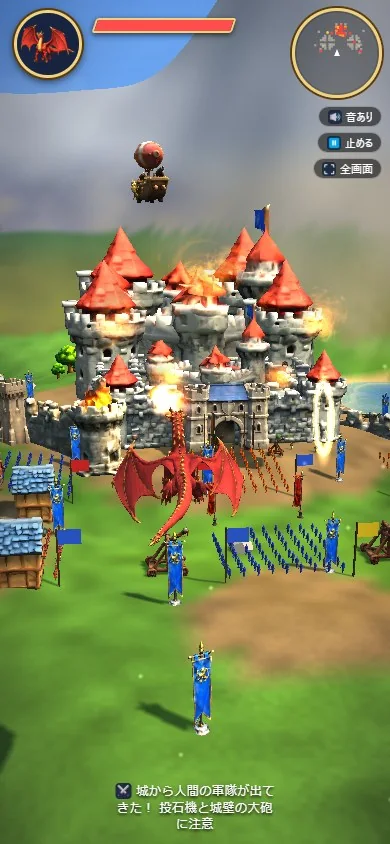
PC Chromeの390px幅。スマホ実機の速度試験ではありません。
城と軍勢を中央にまとめ、竜を手前へ寄せました。左右の町、投石機、隊列は実際の戦場です。見本とは空の色、建築の造形、兵士の密度が異なります。
本編・第1章 洞窟
勇者一行が竜を見上げる
見本の1シーン
今回の実ゲーム写真
この場面の動画
スマホ幅の実画面も見る
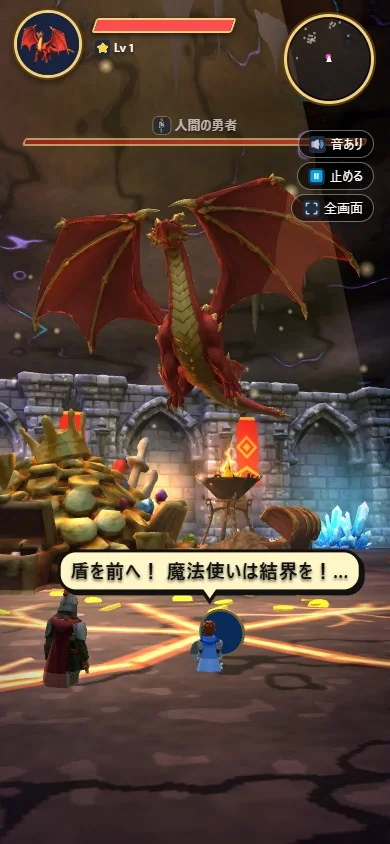
PC Chromeの390px幅。スマホ実機の速度試験ではありません。
人間側から竜を見上げる場面を、洞窟の通常イベントへ追加しました。見本とは人物の衣装と宝物の背景が異なります。
本編・第1章 洞窟
炎を盾と結界で受ける
見本の1シーン
今回の実ゲーム写真
この場面の動画
スマホ幅の実画面も見る
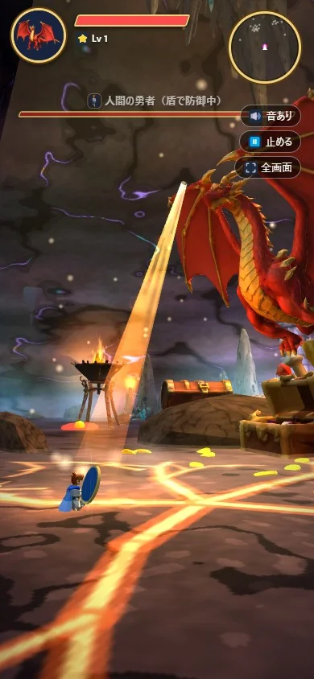
PC Chromeの390px幅。スマホ実機の速度試験ではありません。
竜の炎を青い盾と金の結界で受け止めます。谷用の炎が二重に出て盾を隠す問題を修正しました。人物・盾の模型は既存素材です。
本編・第1章 洞窟
勇者が飛び込み斬りを放つ
見本の1シーン
今回の実ゲーム写真
この場面の動画
スマホ幅の実画面も見る
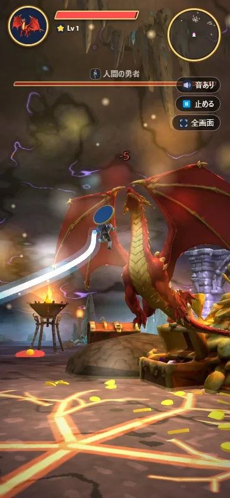
PC Chromeの390px幅。スマホ実機の速度試験ではありません。
勇者が跳び上がり、青い斬撃を竜に当てます。踏み込み、接触、着地を別の間で見せます。見本とは剣と人物の細部が異なります。
本編・第1章 洞窟
竜と勇者3人が向き合う
見本の1シーン
今回の実ゲーム写真
この場面の動画
スマホ幅の実画面も見る
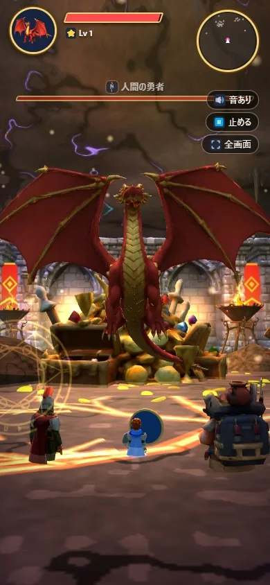
PC Chromeの390px幅。スマホ実機の速度試験ではありません。
竜が翼を広げ、3人が並んで向き合います。スマホ幅では一行の左右間隔も狭めました。会話・演出後は操作へ戻ります。
本編・第1章 谷
谷で2体が接近する
見本の1シーン
今回の実ゲーム写真
この場面の動画
スマホ幅の実画面も見る
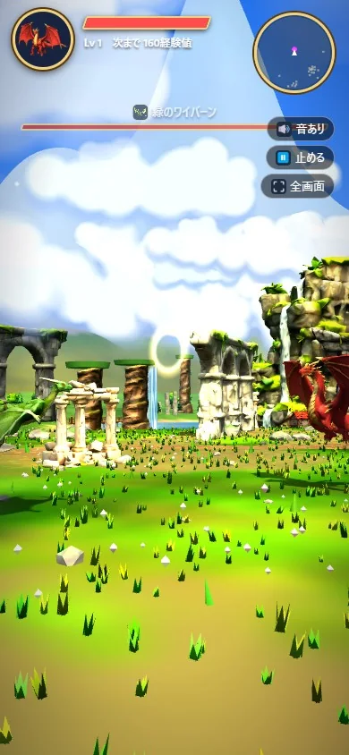
PC Chromeの390px幅。スマホ実機の速度試験ではありません。
谷の模擬戦で2体が低く接近します。視点の前に柱が入り、緑のワイバーンが隠れる位置を避けました。見本と同じ地形ではありません。
本編・第1章 谷
空中で正面からぶつかる
見本の1シーン
今回の実ゲーム写真
この場面の動画
スマホ幅の実画面も見る
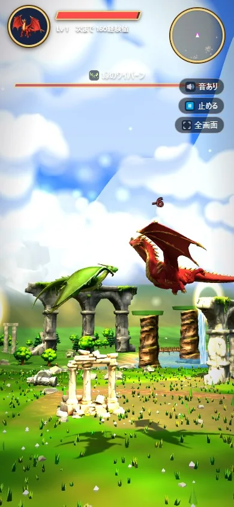
PC Chromeの390px幅。スマホ実機の速度試験ではありません。
互いに近づき、空中で衝突して火花を出します。通常の模擬戦へ続く導入です。見本の空気のゆがみや描線とは表現が異なります。
本編・第1章 谷
炎を横へかわす
見本の1シーン
今回の実ゲーム写真
この場面の動画
スマホ幅の実画面も見る
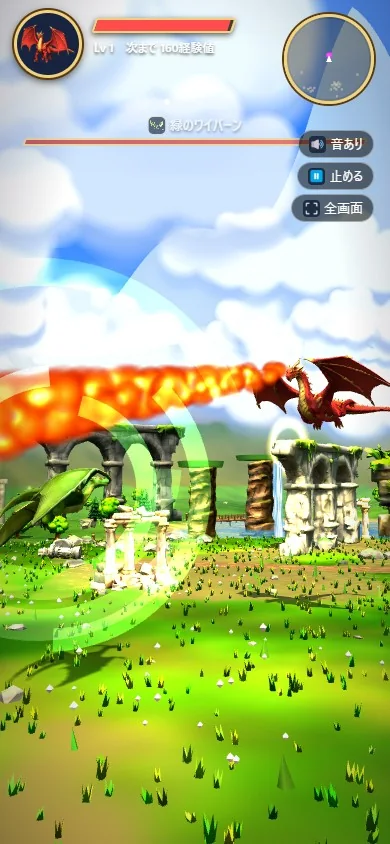
PC Chromeの390px幅。スマホ実機の速度試験ではありません。
緑のワイバーンが体をひねって赤い竜の炎をかわします。2体と炎の方向を同じ画面で見せます。
本編・第1章 谷
空中で組み合う
見本の1シーン
今回の実ゲーム写真
この場面の動画
スマホ幅の実画面も見る
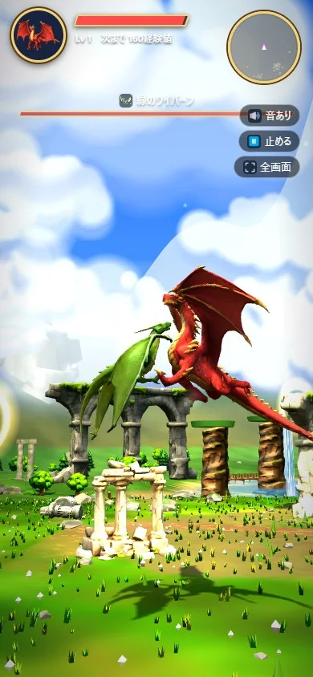
PC Chromeの390px幅。スマホ実機の速度試験ではありません。
空中で脚を前へ出して組み合い、離れて模擬戦へ戻ります。模型の爪の骨を接触点へ向けています。見本と模型の骨格・手足の形は異なります。
本編・第2章 迷宮
階段のある広間へ入る
見本の1シーン
今回の実ゲーム写真
スマホ幅の実画面も見る
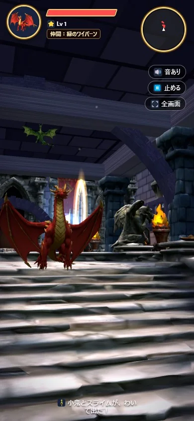
PC Chromeの390px幅。スマホ実機の速度試験ではありません。
高い石の広間と階段から、竜が入る場面へ変更しました。視点を塞いでいた柱を避け、導入中の自動射撃も止めました。
本編・第2章 迷宮
小型の敵を炎で迎え撃つ
見本の1シーン
今回の実ゲーム写真
青いスライム、小鬼、骸骨が階段の下で迎え撃ちます。通常戦闘中に炎を放つ画面です。見本とは敵の模型と床の映り込みが異なります。 録画の該当フレームを使用。
本編・第2章 迷宮
鎧の竜人と向き合う
見本の1シーン
今回の実ゲーム写真
スマホ幅の実画面も見る
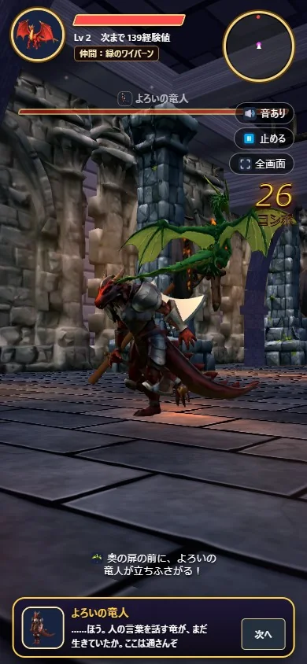
PC Chromeの390px幅。スマホ実機の速度試験ではありません。
鎧の竜人の間合いを詰め、手に持つ斧と双方の姿を見せます。見本とは鎧と斧の細部が異なります。
本編・第2章 迷宮
鎖で封じられた扉にたどり着く
見本の1シーン
今回の実ゲーム写真
スマホ幅の実画面も見る
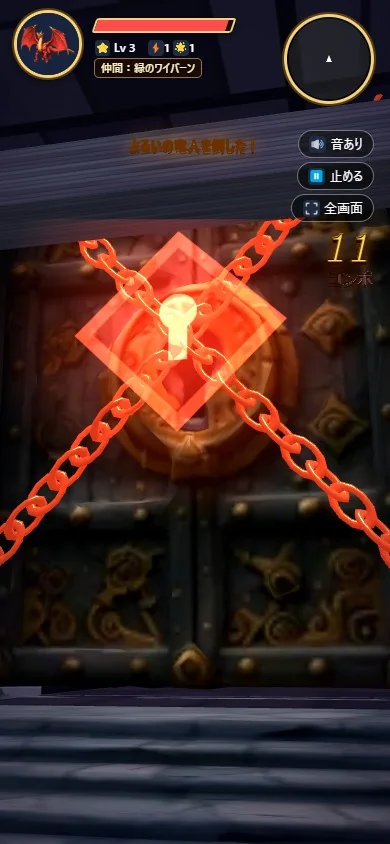
PC Chromeの390px幅。スマホ実機の速度試験ではありません。
敵を倒すと封印扉へ視点が移り、光る鎖が解けて扉が開きます。開く直前の実画面です。
本編・第3章 守護者
封印門の前でゴーレムと対峙する
見本の1シーン
今回の実ゲーム写真
この場面の動画
スマホ幅の実画面も見る
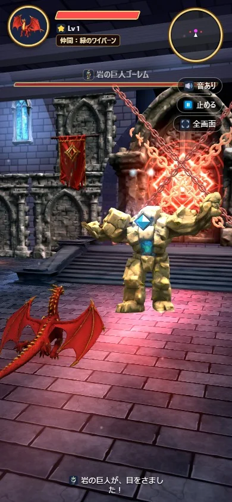
PC Chromeの390px幅。スマホ実機の速度試験ではありません。
封印門の前で岩の巨人と対面します。石の柱・階段と巨人の大きさが同時に分かる視点へ寄せました。見本とは石肌と体の造形が異なります。
本編・第3章 守護者
胸の核へ炎を当てる
見本の1シーン
今回の実ゲーム写真
この場面の動画
スマホ幅の実画面も見る
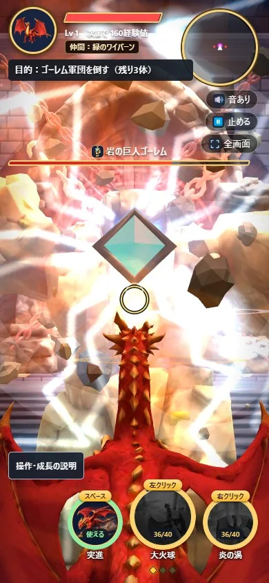
PC Chromeの390px幅。スマホ実機の速度試験ではありません。
炎が胸の核に当たると明るくなり、腕が反応して岩が飛びます。核を縮小しましたが、見本の細かな石片・反射とは差が残っています。
本編・最終章
封印された魔王と対面する
見本の1シーン
今回の実ゲーム写真
スマホ幅の実画面も見る
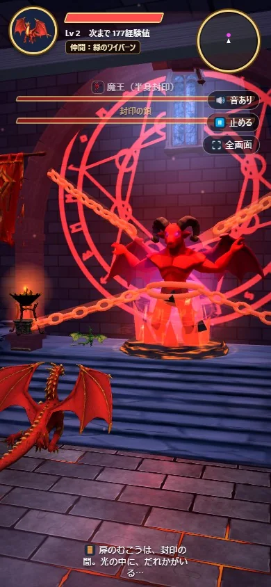
PC Chromeの390px幅。スマホ実機の速度試験ではありません。
封印された赤い有翼の魔王と対面します。骨で動く既存の模型を使用し、封印中と解放後の姿を区別しました。見本とは顔・装飾の造形が異なります。
本編・最終章
解放した魔王と炎・魔力を撃ち合う
見本の1シーン
今回の実ゲーム写真
この場面の動画
スマホ幅の実画面も見る
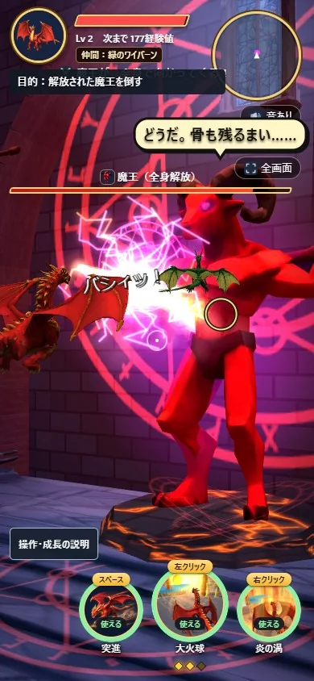
PC Chromeの390px幅。スマホ実機の速度試験ではありません。
封印解除後は魔王の脚まで見せ、竜の炎と手から出る魔法を撃ち合わせます。脚の骨が胴体側へ折れ込む問題を修正しました。見本と顔・体の造形、床の反射は異なります。
以前の章ごとの全体図・写真・コメント・撮影条件
この章別一覧の写真は前回の写真です。今回の撮り直しは上の17場面をご覧ください。
無双編・第2章 王都
1. 王都と大火球
城と竜が同時に見える王都の導入を追加。3.2秒後に通常の飛行へ戻ります。
手本のイラスト
演出改善後の実ゲーム（11月18日）
改善前（11月18日昼）の参考動画
今回直した範囲と残る違い
王都の導入構図を改善しました。原画の兵の密度・空の色・模型の造形と完全に一致するものではありません。大火球の技そのものは今回変更していません。
撮影条件
章の到達済みセーブ（洞窟は新規）から、出撃・紙芝居・会話送り・操縦・攻撃は通常入力。カメラ、HP、人物座標、ゲーム時刻を撮影用に変更していません。PC Chromeで確認。スマホ幅はPC上の画面幅確認で、実機性能の測定ではありません。
本編・第1章 洞窟
2. 勇者がねぐらへ乗り込む
着地後、勇者一行と赤竜を横から一緒に見せます。会話は下端に寄せました。
手本のイラスト
演出改善後の実ゲーム（11月18日）
改善前（11月18日昼）の参考動画
今回直した範囲と残る違い
対面の構図と会話の重なりを改善。原画の4コマすべての動作・人物造形を新造したわけではありません。
撮影条件
章の到達済みセーブ（洞窟は新規）から、出撃・紙芝居・会話送り・操縦・攻撃は通常入力。カメラ、HP、人物座標、ゲーム時刻を撮影用に変更していません。PC Chromeで確認。スマホ幅はPC上の画面幅確認で、実機性能の測定ではありません。
本編・第1章 谷
3. ワイバーンとの模擬戦
模擬戦が近い間合いで始まり、赤竜と緑のワイバーンを同時に見せる2.4秒の導入を追加。初動の突進も減速しました。
手本のイラスト
演出改善後の実ゲーム（11月18日）
今回直した範囲と残る違い
導入で2体を同時に見せます。戦闘中の通常カメラは維持。原画の全4コマの演出を同時に再現するものではありません。
撮影条件
章の到達済みセーブ（洞窟は新規）から、出撃・紙芝居・会話送り・操縦・攻撃は通常入力。カメラ、HP、人物座標、ゲーム時刻を撮影用に変更していません。PC Chromeで確認。スマホ幅はPC上の画面幅確認で、実機性能の測定ではありません。
本編・第2章 迷宮
4. 地下の迷宮へ
迷宮では、竜を左手前に残し、石の広間と奥の敵を見渡す導入に変更しました。
手本のイラスト
演出改善後の実ゲーム（11月18日）
今回直した範囲と残る違い
迷宮の開幕を撮影。奥の鎧の竜人を含む全戦闘を今回通して検証したわけではありません。
撮影条件
章の到達済みセーブ（洞窟は新規）から、出撃・紙芝居・会話送り・操縦・攻撃は通常入力。カメラ、HP、人物座標、ゲーム時刻を撮影用に変更していません。PC Chromeで確認。スマホ幅はPC上の画面幅確認で、実機性能の測定ではありません。
本編・第3章 守護者
5. 封印門を守るゴーレム
竜を左手前、ゴーレムと封印門を奥に見せます。登場文字を小さく上へ移しました。
手本のイラスト
演出改善後の実ゲーム（11月18日）
今回直した範囲と残る違い
対決の構図と文字の配置を改善。床の反射・模型の質感は原画と異なります。スマートフォン実機の速度は未測定です。
撮影条件
章の到達済みセーブ（洞窟は新規）から、出撃・紙芝居・会話送り・操縦・攻撃は通常入力。カメラ、HP、人物座標、ゲーム時刻を撮影用に変更していません。PC Chromeで確認。スマホ幅はPC上の画面幅確認で、実機性能の測定ではありません。
本編・最終章
6. 封印を解いて魔王の間へ
封印された魔王と竜を一緒に見せ、体を覆う光柱を薄くしました。暗かった体の材質も明るくしています。
手本のイラスト
演出改善後の実ゲーム（11月18日）
今回直した範囲と残る違い
半身封印の登場と操作復帰を確認。全身解放後の戦闘を最後まで通した検証・原画と同じ新規模型の制作は今回の範囲に含みません。
撮影条件
章の到達済みセーブ（洞窟は新規）から、出撃・紙芝居・会話送り・操縦・攻撃は通常入力。カメラ、HP、人物座標、ゲーム時刻を撮影用に変更していません。PC Chromeで確認。スマホ幅はPC上の画面幅確認で、実機性能の測定ではありません。
作業時間・確認範囲・やり直した理由
指示受領：2026-11-18 18:26:57 JST。ページ生成：18:52:17 JST。ここまで25分20秒（待ち込み・秒未満切捨て）。公開確認とSlack配達は別の記録です。
使用量は2026-11-18T18:48:33.616070+09:00集計時点の途中値。公開・最終確認までの総量ではありません。キャッシュは入力の内数で重複加算しません。
| 担当 | 総量 | キャッシュ入力 | 非キャッシュ入力 | 出力 |
|---|---|---|---|---|
| 親：設計・統合・検証 | 13,986,997 | 13,757,312 | 190,453 | 39,232 |
| Sol：調査・パッチ・独立確認 | 3,904,867 | 3,765,760 | 124,537 | 14,570 |
Solの最初の3区間：調査1分26秒、実装1分20秒、独立確認1分3秒（秒未満切捨て）。他の区間は引き続きローカル記録で管理。処理開始と指示受領を同一視せず、独立した受領時刻が未取得の子区間はnullです。
やり直し：低速なソフトウェア描画から共通GPU枠へ切替／竜が小さく映ったため視点を調整／既存カメラとの競合を修正／会話の自然終了と検証クリックの競合を修正。ゲームの例外と検証用操作の失敗を分けています。新規模型生成はなし。
根拠：今回のPC内ゲーム描画・状態記録・範囲限定の使用量ログ集計。各場面の終了時刻、実行版SHA、元写真は「比較シーン改善」の制作記録に保管。承認・認証で停止した作業はありません。
子担当の区間別記録（上の担当合計の内訳。再加算しません）。時刻は11月18日JST。送信と受領は別で、厳密な受領は未取得です。
| 項目 | 指示送信 | 着手 | 完了報告 | 所要時間 | トークン |
|---|---|---|---|---|---|
| 比較6場面の独立調査 | null（未取得） | 18:28:03 JST | 18:29:29 JST | 1分26秒 | 632,125 キャッシュ 565,760 / 非キャッシュ 63,999 / 出力 2,366 |
| 洞窟と模擬戦の構図パッチ | null（未取得） | 18:29:52 JST | 18:31:12 JST | 1分20秒 | 594,922 キャッシュ 574,720 / 非キャッシュ 17,444 / 出力 2,758 |
| 親パッチの独立レビュー | null（未取得） | 18:33:19 JST | 18:34:22 JST | 1分3秒 | 857,254 キャッシュ 827,008 / 非キャッシュ 28,579 / 出力 1,667 |
| 使用量の初回集計 | null（未取得） | 18:34:53 JST | 18:36:17 JST | 1分23秒 | 864,307 キャッシュ 854,784 / 非キャッシュ 6,510 / 出力 3,013 |
| 通常入力の深い試験台本 | 18:36:35 JST | 18:36:35 JST | 18:38:20 JST | 1分44秒 | 678,472 キャッシュ 667,264 / 非キャッシュ 6,972 / 出力 4,236 |
| 使用量の差分更新 | 18:47:27 JST | 18:47:27 JST | null（未取得） | 0分25秒 | 277,787 キャッシュ 276,224 / 非キャッシュ 1,033 / 出力 530 |
今回の画像へのコメントをコピー
入力はこのブラウザに保存されます。旧ページのコメントは下の過去資料に残っています。
今回の改善と確認
実装：王都の配置、洞窟・ワイバーン各4場面、迷宮の広間・小敵・竜人・封印扉、巨人の核と反応、魔王の全身と撃ち合いを改修。既存模型を使用し、新規GPU模型の生成数には加えていません。
実描画：修正後の通常進行をPC幅1280・390で確認し、場面ごとの写真を撮影。開始地点だけ章のセーブで選択し、座標・HP・カメラを撮影用に書き換えていません。
公開：本編・無双編と、この比較ページの写真を同じ更新として配信します。
残る違い・未確認：見本と人物・敵・建物の造形、材質、色、細かな粒子・反射には差があります。スマホ実機の速度、全章通し、全キャラ・全難度は今回未確認。
指示時刻：2026/11/18 19:43:08 JST
検証・記録時刻：2026/11/18 20:35:06 JST
ここまでの所要時間：51分57秒（検証・記録時点、公開と最終報告はこの後）
集計範囲：秒未満切り捨て。親のトークンは必殺技の追加依頼受領前までで打切り。以降の統合・公開作業は混在するため個別項目へ全量を割り当てない。各担当は専用ログの該当区間。最終報告の全量ではない。根拠：mae / reference_match_1118 の parent-usage.json、sol/usage.json、astra/usage.json、terra/usage.json。
キャッシュ入力は入力の内数です。総量へ再加算しません。並行作業の時間も足して全体の経過時間とは扱いません。
| 担当 / 時間 | 総量 | キャッシュ入力 | 非キャッシュ入力 | 出力 |
|---|---|---|---|---|
| 親：王都・統合・通常入力の撮影 35分8秒までの途中集計 | 20,891,300 | 20,606,208 | 233,954 | 51,138 |
| Sol：洞窟・ワイバーン 18分03秒＋4分10秒（途中の休止を除く） | 14,280,599 | 13,973,376 | 258,330 | 48,893 |
| Astra：広間・巨人・魔王・骨 29分14秒（担当実働） | 16,733,264 | 16,466,432 | 216,470 | 50,362 |
| Terra：見本照合・比較ページ更新 2分52秒（待機除外） | 865,129 | 803,968 | 54,068 | 7,093 |
11月15日の過去資料・以前のコメントを開く
ここから下は旧版です。竜・敵・カメラの位置を撮影用に決めた写真を含み、今回の通常プレイ写真とは区別しています。
▶ ゲームを遊ぶ11月15日の見比べ資料
2026年11月15日 版 1116aazx （左：渡された絵 右：ゲームの画面）
結論：ふみさんの2回めの指示（11/15 午後）で、表紙の4コマ・洞窟・ワイバーン・迷宮・ゴーレム戦・魔王の間を、絵と同じ構図になるように撮り直しました。王城は、とがった塔のならぶ石の城に作り直しました。洞窟には竜の登場の場面、迷宮には大階段と鎖の封印の扉、魔王の間には「半身封印 → 全身解放」の順番が入りました。まだ弱いのは、谷の地面のやわらかさと、炎の形（丸い火の玉のつらなり・白っぽい帯）です。
✍ 文字で指示できます。各コマの下の黄色い箱で、直したい所にチェック → コピー → Claude Code に貼ってください。コマの見出しも文字で選べます。 関連：前後の対比／紙芝居の一覧／身長くらべ
表紙の4コマ

- 左上：低い所から見上げた、ほえる竜。頭は画面の上、口もとに炎の光。右うしろに、とがった塔のならぶ王城。
- 右上：竜が画面の左に大きく、ななめに飛ぶ。行く先に金色の輪が2つ、下に滝と石のアーチ、右上の空にワイバーン、ふちに疾走感の筋。
- 左下：左上の竜から右下のゴーレムへ炎のすじ。胸が青く光り、岩のかけらが飛ぶ。
- 右下：左下の手前に竜の背と翼。まん中に兵の隊列と投石機、燃える城壁と城、奥の右上に王城。
- 左上：絵は口から白い炎を空へはく瞬間。ゲームは口もとの光まで。竜のうろこは絵ほど細かくない。
- 右上：ワイバーンは緑（絵は青）。谷は絵ほど深くない。
- 左下：ゴーレムは絵ほど大きくなく、手前に木が映る。炎は丸い火の玉のつらなり。
- 右下：絵は竜の頭が右を向いて大きく入る。ゲームは背中ごし。兵は絵ほどびっしりではない。
- 4コマとも、表紙と同じ構図になるように、竜・相手・カメラの置き場所を決めて撮り直した（11/15 午後。ふみさん「構図守ってくれ」「構図、位置関係、カメラ、エフェクトで評価して合わせて」）。撮る台本は tripo\shots\covA\cover4.py。
- 王城を作り直した（とがった塔のならぶ灰色の石の城。前は白くとけた岩山に見えた）。
- 赤い竜が炎をはく時・必殺技をためる時に、口もとが光り、口を大きく開けるようにした。
- 前の絵は 表紙スクショ_before_1115c フォルダ。
勇者の一行との戦い（洞窟）

- ① 竜の登場：3人の背中ごしに、左上を飛ぶ竜を見上げる。並びは絵と同じ（左から魔法使い・騎士・勇者）。
- ② 真横から。左上に竜の頭、口から勇者の盾へ炎。金色の結界。
- ③ 勇者が空中から竜の頭へ斬りこむ。
- ④ 3人のうしろから、翼を広げた竜と向き合う。
- 絵の①は外（城と橋）だが、ゲームは洞窟の中（決めごと）。
- ②③は、撮る時に立ち位置とカメラを決めた物。遊んでいる時のカメラは竜のうしろ。
- 炎は丸い光のつらなりで、絵の太いすじにはならない。青い三日月の剣筋は絵より小さい。
- 一行は絵より小さく映る。
- 章の始まりに「竜の登場」の場面を入れた（竜が飛んで現れ、一行の頭の上をすべって降りる。約3.8秒・スキップできる）。ふみさん「1枚目は竜の登場シーン」。
- 一行の並びを絵と同じにし、竜との間を近づけた（17 → 13）。
- 竜の光を、目のあたり → 口の中に直した（ふみさん「目ではなく口光らせて」）。竜が宝の山や床にめりこまないよう、降りる道と立つ場所を直した（ふみさん「めり込んでいる」）。
- 撮る瞬間を選び直した（ふみさん「スクショのタイミングが悪い」）：①翼を広げて飛ぶ所 ②真横から炎を受ける所 ③空中の勇者と竜の頭 ④口が光ってほえる所。
- 4コマとも撮り直した（台本 tripo\patches\cave_intro2.py、撮る台本 tripo\shots\cavC\cave4.py）。
ワイバーンとの一騎打ち

- ① 緑のワイバーンが手前、赤い竜が奥で土けむり。うしろに遺跡と滝のがけ。
- ② 正面からぶつかる。星形の光と金の破片。足元に遺跡。
- ③ 緑の風の帯で炎をかわす。
- ④ 2体が近くで組み合う。
- 地面は、色のむらと小石を足したが、絵のやわらかい草原には届いていない。
- ④は、絵ほど腕や首ががっちり組んでいない。
- ③の炎は、丸いかたまりのつらなり。
- 空を深い青と大きな雲に。一騎打ちの舞台に、石の遺跡・アーチ・滝のがけ・草と花を足した（ふみさん「空の描写、地面の描写とオブジェクト」）。
- 突っこむ時の土けむりと石つぶて、ぶつかる時の星形の光、風の帯、速さの筋を足した。
- 4コマとも、2体を大きく映して撮り直した（台本 tripo\patches\wyv_look.py・wyv_look2.py、撮る台本 tripo\shots\wyvD\wyv4.py）。
地下の迷宮

- ① 左手前に竜、右奥に手すりつきの大きな石の階段。青い窓とたいまつ。
- ② 左の竜から右へ広がる炎。右に小鬼と骸骨、左下にスライム。
- ③ 左に竜、右に大きなよろいの竜人、間に小鬼。壁にアーチのくぼみ・柱・赤いたれ幕。
- ④ 竜の彫りの扉に、X字の鎖と赤く光るかぎ穴の印。
- ①②③は、撮る時に竜と敵を絵の並びに置き、横からのカメラで撮った物。遊んでいる時のカメラは竜のうしろ。
- 絵の①は階段が折れて、2階の回廊がある。ゲームはまっすぐな階段1つ。
- 絵は竜を横から見ている。ゲームは竜のななめうしろから。
- 壁を作り直した（石1つずつの光とかげ、アーチのくぼみと柱の壁を並べた）。ふみさん「壁がしょぼい、階段がない」。
- 石の広間の入口に大階段を置いた（竜は階段の上から始まる）。
- 封印の扉を作り直した（鎖の輪・回る紋・脈動・床の赤い照り返し）。
- 迷宮の敵を大きくした（小鬼 1.7倍・骸骨 1.6倍・よろいの竜人 1.5倍など）。炎は先が広がるだいだい色に。封印の扉は、開く時に石のわくが残り、板だけが下がる。
- 台本 tripo\patches\dun_look2.py・dun_look3.py、撮る台本 tripo\shots\dunE\dun6.py。階段・扉・壁のモデルは Tripo で作った。
封印の扉の前のゴーレム戦

- 鎖の封印の扉の前に、胸が青白く光るゴーレム。
- 炎が当たると、いなずま・光の輪・火花・岩のかけら。
- 炎が当たった時のいなずまが多めで、見本の「胸の1点が光る」感じよりにぎやか。
- 見本のぬれて光る床は無い。
- 画面の文字やボタンの並びは、見本とちがう。
- ゴーレムを大きく（1.5倍）、明るい黄土色にした。扉の前の石段は暗い石の色に。
- ゴーレムの胸に四角い青白い光・目の光を足した。うしろの扉と壁も作り直した（ふみさん「ゴーレムのグラフィック、封印のグラフィック」）。
魔王の間

- ① 左手前に竜。暗い石のかべの大きな赤い魔法陣の前、祭だんの上に、赤い結晶と光る鎖に閉じこめられた半身の魔王。左右にかがり火・扉・たれ幕。
- ② 左下の竜の炎と、右上に浮かぶ魔王の魔法が、まん中でぶつかる。紫のいなずまと火花。
- 魔王は見本より遠く小さい（①）。モデルの形で、足の先までは見えにくい。
- 床は四角い石で、見本の溶岩のひびの照り返しは少ない。
- 竜の炎は白っぽい帯で、見本の火の束とはちがう。
- ①②は、撮る時に竜と魔王の置き場所とカメラを決めた物。
- 戦いの順番を「半身が封印されたまま少し戦う → 封印がくだける見せ場（スキップできる）→ 全身が解放されて戦う」にした（ふみさん「半身封印されたまま少し→全身解放されて戦うの順番な」）。
- 半身の間は、鎖の帯をけずる。鎖が1本ずつ切れ、最後に魔法陣と石の輪がくだける。
- 「めり込んでいる」（ふみさん）への直し：半身の魔王を、石の輪にしずんだ形 → 床から生えた赤く透ける結晶と光る鎖に閉じこめた形にした。全身解放の魔王は、祭だんや階段に重ならない高さに浮かせた。
- 魔王の間のかべを、ピンクのレンガ → 暗い青黒い石にした。左右の扉とたれ幕、アーチのくぼみの壁を足した。
- 台本 tripo\patches\maou_seal.py・maou_seal2.py、撮る台本 tripo\shots\maoF\maou_shots.py。
こわれる時のかけら（前と今）

- 家・かべがこわれると、折れた木材・屋根がわら・石づみのかけらが飛ぶ（Tripo で3つ作った）。
- 同時に出すのは40個まで。それをこえた分は、今までの四角い箱で出る。
- 四角い箱だったかけらを、形のあるモデルに入れかえた。家がこわれる時の数を10 → 16にした。
気づき
- 絵はどれも「止まった1コマ」で、竜を横から見ています。ゲームは操作するので、竜のうしろ寄りから見ます。ここが一番ちがって見える理由です。
- 見本の画面（ゴーレム戦・魔王の間）の、体力の位置や技のボタンの並びは、まだ合わせていません。
- シナリオ1は、勇者 → ワイバーン → 地下の迷宮 → ゴーレム → 封印の扉と魔王。シナリオ2は今までの6章です。選択画面のボタンで切りかえます。
前回の表示変更の記録（19:12時点）
依頼：11月18日19:00:27 JST。17場面へ分割し、前後送り・拡大・場面ごとのコメントを追加。旧コメントを保持。PC幅1280・スマホ幅390で全17場面の画像、保存・再読込・コピー、横溢れなしを確認。新規のゲーム撮影・ゲーム本体の変更はありません。
ページ準備：19:09:33 JST。ここまで9分5秒（秒未満切捨て、対象確認の待ちを含む）。公開・最終報告はこの時刻より後です。
この表示変更の親作業のみ、2026-11-18T10:08:54.446Zまでの途中集計。総量 1,872,026、キャッシュ入力 1,779,200、非キャッシュ入力 80,884、出力 11,942。キャッシュは入力の内数で再加算しません。他のゲーム修正・過去の作業は含みません。
再試行：検証用台本の引数指定を1回修正。承認・認証停止なし。根拠：maeのhikaku_scene_steps_1118内のcheck.json・usage.json。11場面は同じ瞬間の修正後写真が未撮影です。